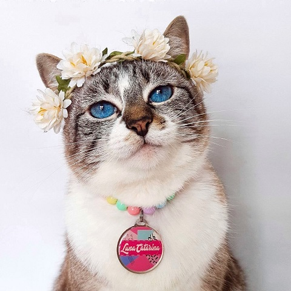
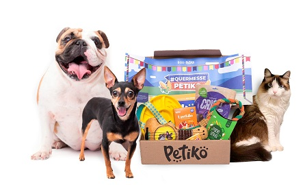
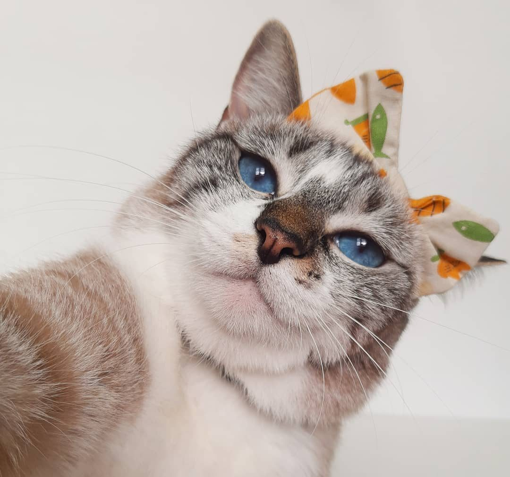

Luna Catarina, a gatinha influencer
 Nos últimos anos muitos donos criaram um instagram para seus pets. Seja para diversão ou para compartilhar com os amigos a vida do seu animailzinho.
O que muitos não sabiam, é que esse tipo de instagram iria virar uma febre.
Os pet influencers no Brasil
Com vídeos fofos e engraçados e vozes que ganham de seus humanos, os animais ganharam seus próprios perfis nas redes sociais e conquistaram milhares de seguidores.
Alguns tutores apresentam um conteúdo mais informativo nas páginas de seus pets; outros focam em divulgar produtos que ganham, faturando como influenciadores digitais e tem aqueles que preferem apenas trazer o cotidiano da família multiespécie de forma bem humorada.
Essas páginas do instagram passaram a crescer, e consequentemente, os donos desses animais passaram a influenciar os usuários, sobre cuidar de seus bichinhos e até mesmo adotar um.
Luna Catarina e sua família
Com a Luna Catarina e sua família não foi diferente. A familia de 5 gatinhos e a shihtzu Mabê, ficaram conhecidos no aplicativo de vídeos TikTok, com seus vídeos de dublagem e rotina dos animais.
@gatalunacatarina essa trend é verídica! :) #animaisnotiktok #gatalunacatarina #catsoftiktok ♬ The Lazy Song - Galuh
@gatalunacatarina se amar é crime…🚔😂 #gatalunacatarina #tiktokpets #catsoftiktok #animaisnotiktok ♬ som original - SalveKay